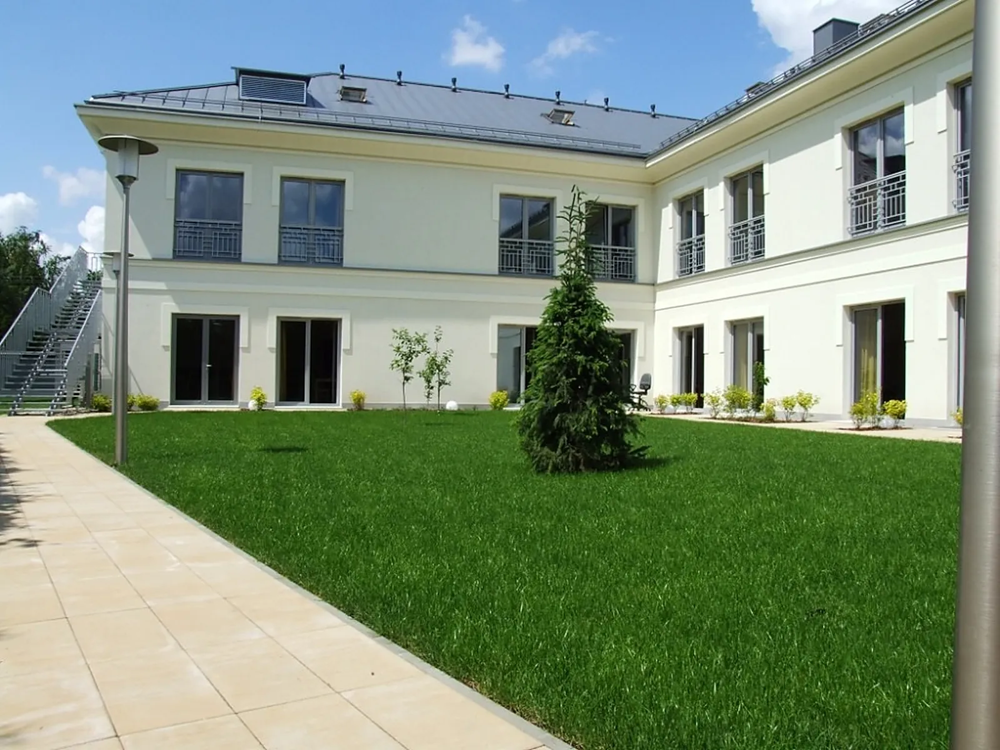
Mieszkanie i opieka - tylko dla seniorów
Dom opieki w Chyliczkach k. Piaseczna. Własne mieszkanie z łazienką i aneksem, pielęgniarki przez całą dobę, lekarze za ścianą i ogród za oknem.
Umów zwiedzanie domuul. Krótka 1, Chyliczki - między Piasecznem a Konstancinem-Jeziorną
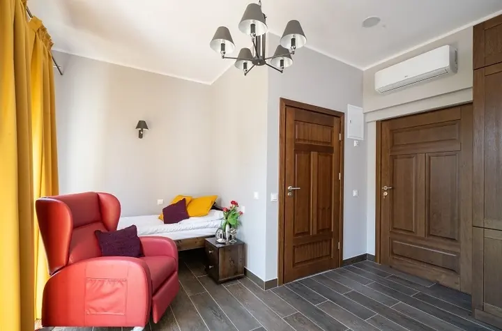
To nie jest zwykły dom spokojnej starości
Budynek zaprojektowaliśmy od zera, z myślą o seniorach. Mieści 30 niewielkich mieszkań jedno- i dwuosobowych, także dla małżeństw. Każde jest umeblowane, klimatyzowane i ma duże okna.
- własna łazienka
- aneks kuchenny
- klimatyzacja i wentylacja
- można zabrać własne meble
- fryzjer i pralnia na miejscu
- wi-fi i pokój do rozmów wideo
Najważniejsze są nie pokoje, ale wspólna przestrzeń. O naszym domu myślimy jak o Uniwersytecie Trzeciego Wieku z internatem.Dwa duże hole z kanapami, kawiarenka na zewnątrz, ogród i kaplica - po to, żeby nikt nie zostawał sam w swoim mieszkaniu.
Mieszkania i wspólne przestrzenie
Pokoje wyłącznie jedno- i dwuosobowe, wokół nich bardzo duże części wspólne. Zdjęcia można powiększyć.
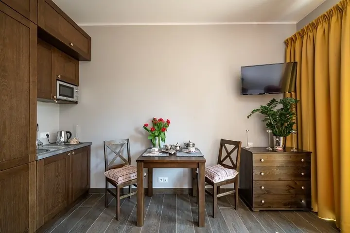
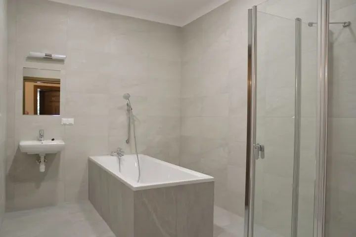
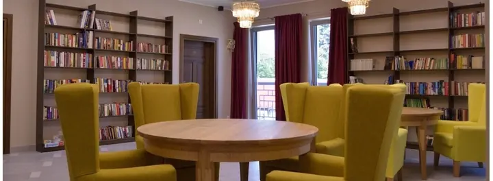
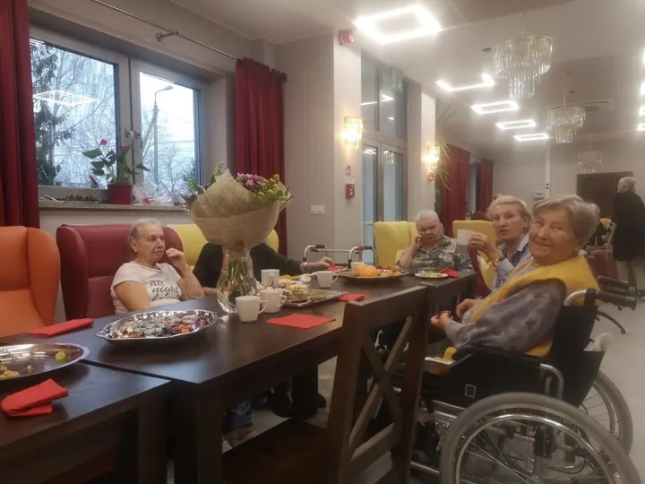
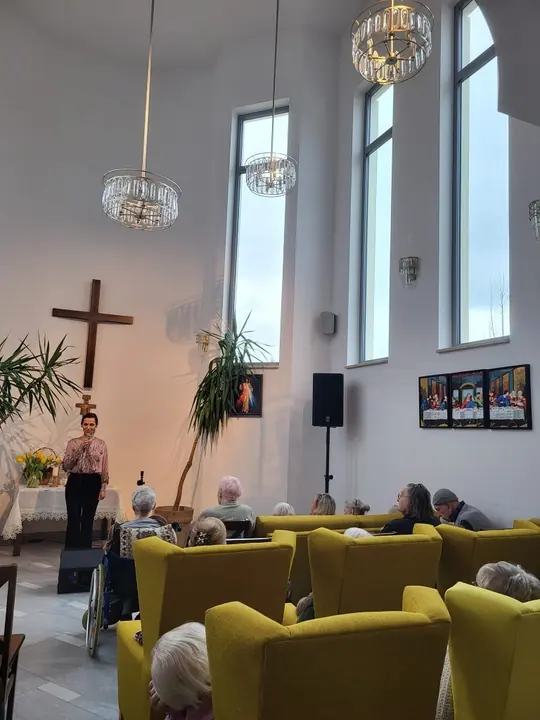
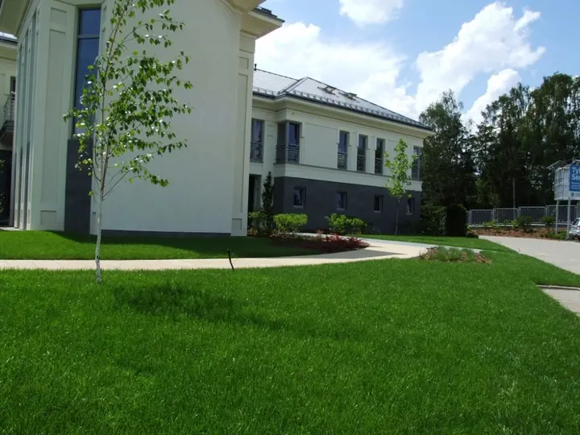
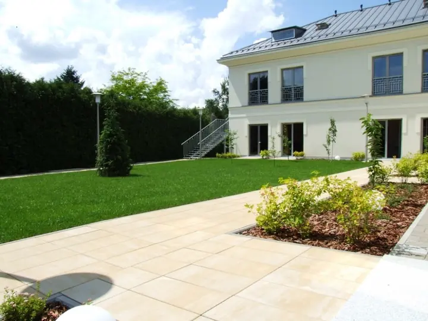
Opieka lekarzy z Centrum Zdrowia
Zaplecze medyczne domu to Centrum Zdrowia - rodzinna firma lekarzy z czteropokoleniową tradycją, siedem placówek w powiecie piaseczyńskim i około 80 lekarzy różnych specjalności.
Pielęgniarki całą dobę
Dbają o bezpieczeństwo mieszkańców, wykonują zabiegi i pobierają materiał do badań.
Lekarz dwa razy w tygodniu
Pełna opieka w ramach POZ, konsultacje z lekarzem rehabilitacji i psychiatrą.
Codzienna rehabilitacja
Gabinet lekarski, zespół rehabilitacyjny, gabinet masażu i zajęcia terapeutyczne.
Badania i specjaliści
RTG, USG, tomografia i rezonans w ośrodkach Centrum Zdrowia, z transportem na wizyty.
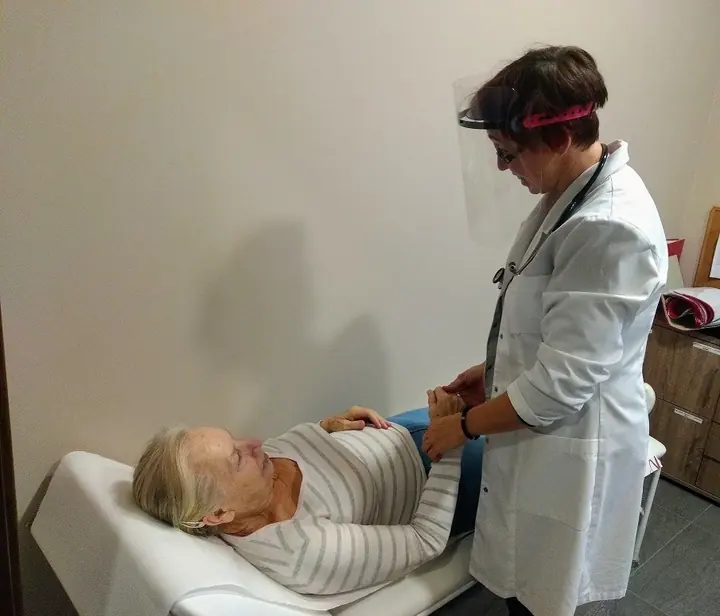
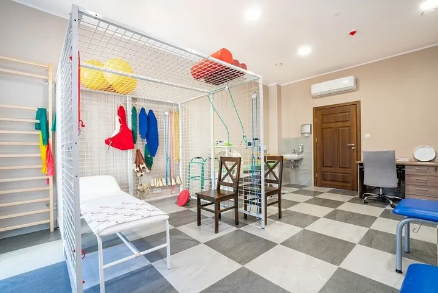
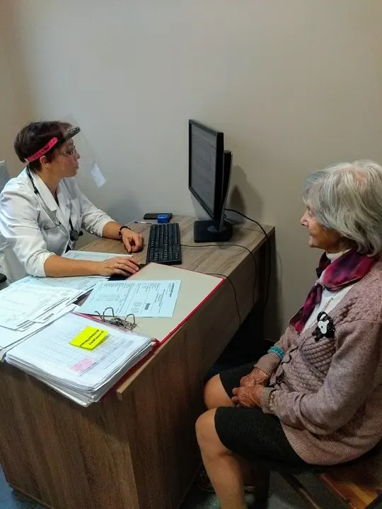
Dyżurna pielęgniarka, przez całą dobę:
733 335 383Codzienność wśród rówieśników
Samotność i brak zajęcia to jeden z największych problemów seniorów. Dlatego organizujemy dzień: zajęcia terapeutyczne, wspólne posiłki, koncerty, spektakle i wycieczki po okolicy.
Gotujemy we własnej kuchni: pięć posiłków dziennie, dopasowanych do zaleceń dietetyka i do gustu mieszkańców.
Byliśmy już m.in.:
- w tężni solankowej w Konstancinie
- w Pałacu w Wilanowie
- w Ogrodzie Botanicznym w Powsinie
- w warszawskim ZOO
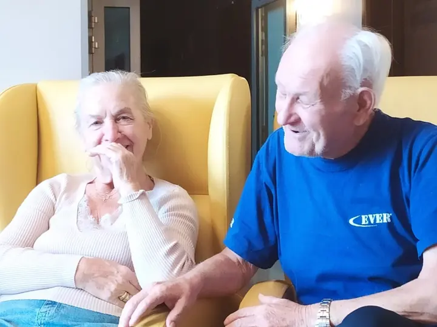
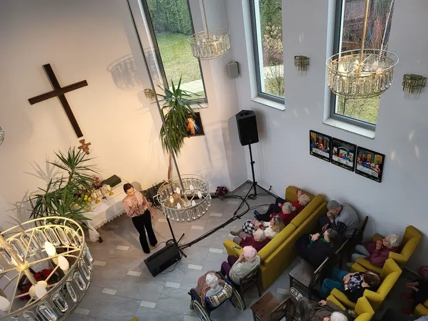
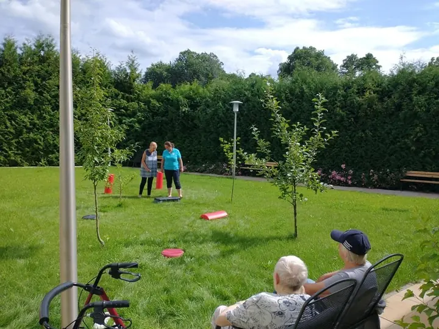
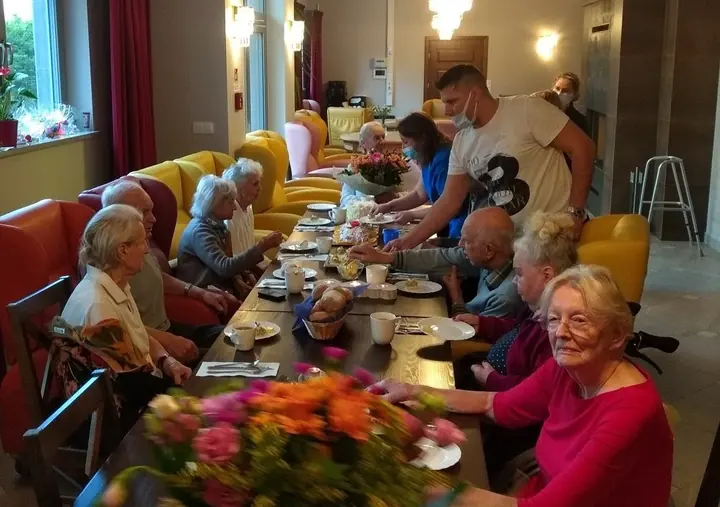
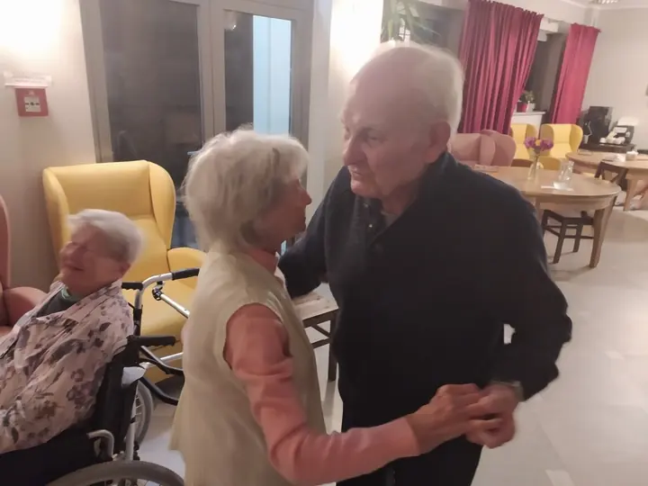
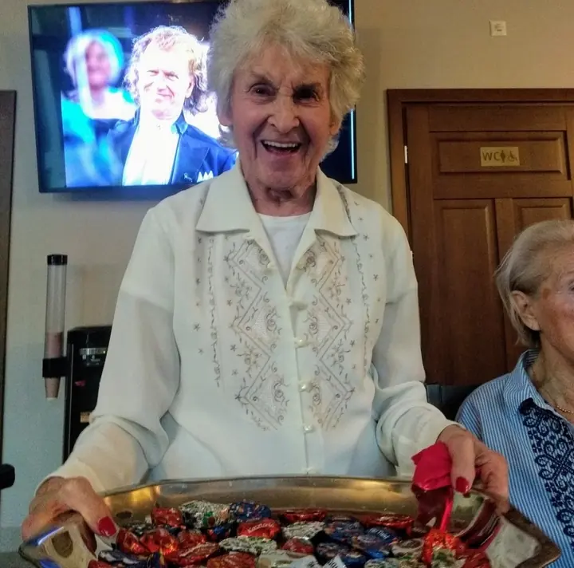
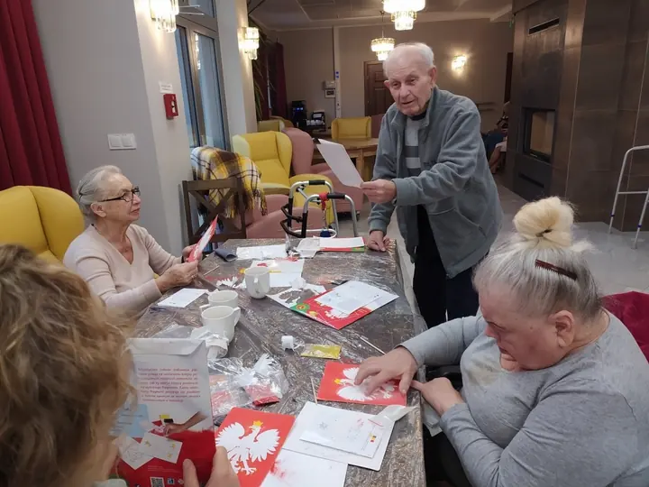
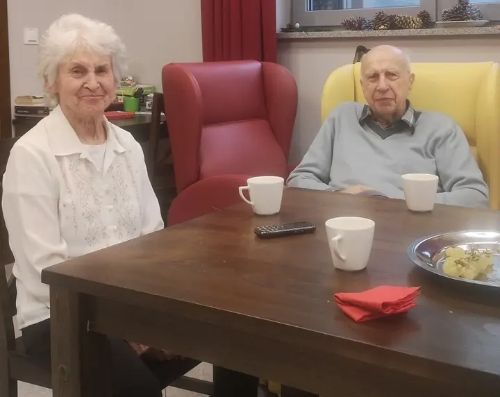
Cennik pobytu stałego
Jedna miesięczna opłata, w której jest mieszkanie, opieka medyczna, rehabilitacja i pełne wyżywienie.
Pokój jednoosobowy
10 300 złmiesięcznie
Własne mieszkanie z łazienką i aneksem kuchennym.
Miejsce w pokoju dwuosobowym
8 300 złmiesięcznie
Dla małżeństw i osób, które wolą mieszkać we dwoje.
W miesięcznej opłacie
- umeblowany, klimatyzowany pokój z łazienką i aneksem
- konsultacje z lekarzem POZ, rehabilitacji i psychiatrą
- umawianie wizyt u specjalistów Centrum Zdrowia
- RTG, USG, tomografia i rezonans
- transport na umówione wizyty
- codzienna rehabilitacja i zajęcia terapeutyczne
- całodobowa opieka pielęgniarska
- konsultacje z dietetykiem
- 5 posiłków dziennie, napoje, owoce i przekąski
- święta i uroczystości okolicznościowe
- wi-fi, pranie, parking
Prowadzimy też turnusy rehabilitacyjne i pobyty czasowe. Chętnie pokażemy dom i odpowiemy na pytania rodziny.
Zapytaj o wolne miejsceZapraszamy do obejrzenia domu
Najlepiej przyjechać i zobaczyć wszystko na miejscu. Prosimy o wcześniejsze umówienie wizyty.
Biuro, pon.-pt. 9-17
733 333 050Dyżurna pielęgniarka, całą dobę
733 335 383Adres
Dom Opieki „Dla Seniorów”
ul. Krótka 1, 05-500 Chyliczki
poczta Piaseczno, woj. mazowieckie
- Park zdrojowy i tężnia w Konstancinie ok. 15 min
- Lotnisko Chopina w Warszawie ok. 30 min
- Piaseczno i Józefosław tuż obok